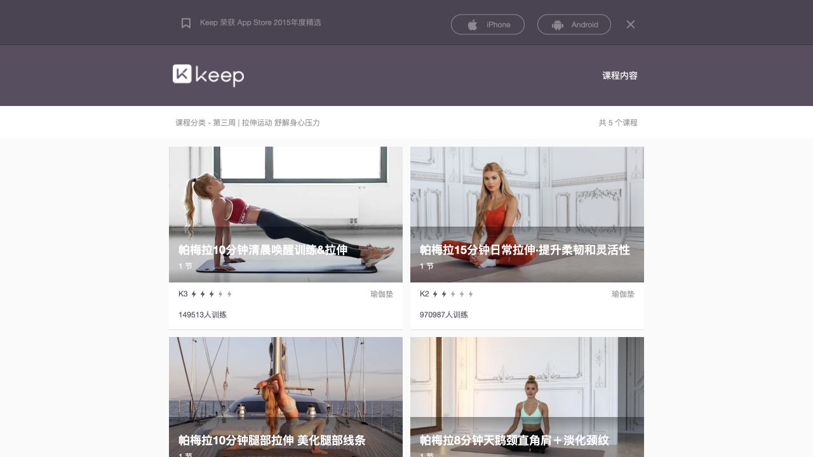

实际观察的公开界面
Keep 官方 Web 目录使用图片课程卡，展示名称、K 等级、器械/场地与参与信息。观察的课程详情样本包含 K1、8 分钟和打开 App 的入口。没有进入原生跟练播放器，无法据此描述实际暂停、动作切换与结束复盘的操作。
结构分析 · 项目推论
| 对象 | 作用 | BrainLab 的对应对象 |
|---|---|---|
| 课程 | 具体训练内容 | 游戏任务与规则版本 |
| 课程属性 | 选择前判断适配 | 认知操作、时长、输入负担、提示 |
| 训练计划 | 组织多次安排 | 任务组合与间隔安排 |
| 会话记录 | 保存一次实际执行 | 完成情况、错误、提示、负荷 |
| 长期回看 | 理解变化与调整 | 稳定指标与版本可比性 |
数据库中的实体边界
游戏不是一次会话；难度不是一个游戏名称。相同游戏可有多个规则版本、提示策略与难度参数。会话必须关联当时版本，避免改版后历史成绩直接合并。计划、实际完成与独立测验也不能混成同一张“成长记录”。
适配与研究缺口
- 目录可按任务、操作负担和时长过滤，而非只按热门度。
- 预计时长与实际时长分开；允许慢速、暂停和分段。
- 先验证用户能否选出合适任务，再测试计划是否增加规律参与。
- 多人协作或家属支持属于后续研究；首版不建立个人健康数据后台。
界面样本与观察记录

引用来源与读取范围
- S32 · Keep：官方课程分类目录 ↗2026 · 公开界面观察 · 全文或正文；2026-10-09 桌面 Web 观察；不同于原生 App。截图为有限界面研究样本。
- S33 · Keep：8 分钟课程详情样本 ↗2026 · 公开界面观察 · 全文或正文；观察到 K1、8 分钟与打开 App 入口；未进入实际跟练播放器。